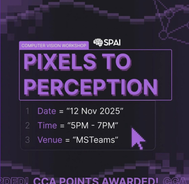

AI Don’t Know
Workshop 1 · Python Foundations
From JavaScript basics to Python for AI, data, and machine learning.
Follow along on your own screen: https://spai-aidk-workshop1.vercel.app/
Who we are, and what we’ve been building.
A quick intro before we get into Python.
SPAI makes AI more accessible to SP students.
We run beginner-friendly workshops, events, and learning experiences for students across courses and schools.
- Open to students regardless of course or school.
- Built by students, for students.
- Focused on practical first exposure, not gatekeeping.

Learning through hands-on sessions.

Beginner-friendly exposure to AI tools and technical learning.

Using data and visualisation to communicate insights.

A workshop series built around accessible AI learning.
Code → data → learning from data.
Three sessions, one beginner-friendly path from Python to machine learning.
The full path, in one view.
3–5PM
3–5PM
3–5PM
What you should leave with.
You don't need to master AI in these sessions. By the end, Python, data, and ML should feel a little less confusing, and a whole lot more approachable.
Python confidence: read and edit basic Python code without freezing.
Data thinking: ask simple questions from data and visualise answers.
ML intuition: understand the basic shape of training and testing a model.
Big picture: see how Python, data, and ML connect.
Make sure your notebook can run.
We will send a full install guide, but these are the pieces you need before the workshop starts.
Install Python. If the installer asks, enable Add Python to PATH.
Install the Python and Jupyter extensions in VS Code.
Open the workshop notebook. Open the folder, then open 01_AIDK_W1_Starter.ipynb.
Install the notebook tools once.
These packages let VS Code run notebooks and prepare you for the data and ML workshops.
python -m pip install ipykernel numpy pandas matplotlib seaborn scikit-learnpython --version
# or
py --version
print("Python is working!")Download the Python notebook.
Open this link, then download the workshop notebook from Google Drive before we begin.
https://drive.google.com/file/d/145cV-S3FoM9snWuZYPXGdX6dlu4wIJ8I/view?usp=sharingToday is about getting comfortable with Python fundamentals.
Why Python matters for AI and data.
Translate familiar programming ideas.
Types, functions, input, logic, loops, lists, and dictionaries.
Complete each notebook prompt, then combine the skills.
What carries into Workshop 2.
You already know programming ideas. Python writes them differently.
Python is the default language for a lot of AI work.
It is readable and widely used for data, AI, and machine learning.
topic = "Python Foundations"
print("Today we are learning:", topic)Code blocks
JavaScript uses curly braces. Python uses colons and indentation.
if (score >= 60) {
console.log("Pass");
}score = 72
if score >= 60:
print("Pass")Variable declaration
Python does not use let, const, or var.
let name = "Ravi";
const score = 82;
var passed = true;name = "Ravi"
score = 82
passed = True
print(name, score, passed)Create and print a course variable.
Complete this code in the next notebook cell.
# Try it out!
# TODO: Create a variable called course and store your course name inside it
# Hint: variable_name = value
# TODO: Print the course variablePrinting output
print() is Python’s version of console.log().
console.log("Hello SPAI!");print("Hello SPAI!")
student_name = "Aisha"
print("Student:", student_name)Fill in the value to print.
Replace the blank so the cell prints Moiz.
name = "Moiz"
print(_____)Booleans and missing values
Python capitalises boolean values and uses None for empty or missing values.
let passed = true;
let remarks = null;passed = True
remarks = None
print(passed)
print(remarks)The small pieces we need before data and ML.
Data types
Python values can be text, numbers, booleans, or empty values.
name = "Aisha" # string
score = 88 # integer
price = 2.50 # float
passed = True # boolean
remarks = None # no value yet
print(name, score, passed)
print(type(name))
print(type(score))
print(type(price))
print(type(passed))
print(type(remarks))Check the variable’s data type.
Fill in the blank with the variable whose type you want to inspect.
student_score = 95
print(type(_____))Python already gives you useful functions.
len() and sum() are built-in tools Python already gives you.
scores = [72, 85, 60, 91]
average = sum(scores) / len(scores)
print("Number of scores:", len(scores))
print("Class average:", average)Choose the correct built-in functions.
Fill both blanks, then run the cell to calculate the average.
scores = [70, 80, 90]
total = _____(scores)
count = _____(scores)
print(total / count)Input is text by default
Because input() gives back text, use int() before doing maths with it.
score_text = "75"
score = int(score_text)
print(score + 5)Ask for input, convert it, and use it.
Write all three lines described in the notebook cell.
# TODO: Ask the user for their score using input()
# TODO: Convert the answer into an integer
# TODO: Print the score plus 10
# Hint: int(...) converts text to a whole numberConditionals
Conditionals let your program make decisions.
score = 72
if score >= 80:
print("Excellent")
elif score >= 60:
print("Pass")
else:
print("Try again")Complete the conditional.
Fill the comparison operator and the missing branch keyword.
score = 58
if score _____ 60:
print("Pass")
_____:
print("Try again")For loops
Use loops when you want to repeat code.
for (let i = 0; i < 5; i++) {
console.log(i);
}for i in range(5):
print(i)
names = ["Aisha", "Ben", "Chloe"]
for name in names:
print("Hello", name)Print every student name.
Write the loop requested underneath the list.
students = ["Aisha", "Ben", "Chloe"]
# TODO: Use a for loop to print each student name
# Hint: for one_student in students:Lists
Lists store multiple values in order. This matters because data often comes in groups.
scores = [72, 85, 60, 91]
print(scores[0])
print(len(scores))
scores.append(78)
print(scores)
for score in scores:
print(score)Add, access, and print list values.
Complete all three TODO instructions in the notebook.
student_names = ["Aisha", "Ben"]
# TODO: Add one more student name to the list
# TODO: Print the first student name
# TODO: Print the full listDictionaries
Dictionaries store labelled information using key-value pairs.
student = {
"name": "Aisha",
"course": "DAAA",
"score": 88
}
print(student["name"])
print(student["score"])Choose the dictionary key to print.
Fill the blank so the cell prints Ben’s course.
student = {
"name": "Ben",
"course": "DISM",
"score": 76
}
print(student[_____])Writing your own functions
Built-in functions are ready-made. def lets you create your own reusable tool.
def calculate_average(numbers):
total = sum(numbers)
average = total / len(numbers)
return average
scores = [72, 85, 60, 91]
print(calculate_average(scores))Fill in the passing score.
Complete the comparison inside the function, then run it.
def check_pass(score):
if score >= _____:
return "Pass"
else:
return "Try again"
print(check_pass(72))Fill it in. Write it. Build it.
Work through all three questions in 01_AIDK_W1_Starter.ipynb.
Complete a class score summary
Fill every blank to calculate the class average and assign the correct status.
scores = [72, 85, 60, 91, 45]
total_score = ____(scores)
number_of_scores = ____(scores)
average_score = ____ / ____
if average_score ____ 80:
status = "Excellent"
____ average_score ____ 60:
status = "Pass"
____:
status = "Needs support"
print("Average:", average_score)
print("Status:", status)Write a result loop
Loop through every score and print Excellent, Pass, or Needs support beside it.
scores = [72, 85, 60, 91, 45]
# Write your loop and conditionals below.Expected: 72 Pass · 85 Excellent · 60 Pass · 91 Excellent · 45 Needs support
Build a student summary
Write summarise_student(student) to calculate the average, classify the result, and print the name, average, and status.
student = {
"name": "Aisha",
"scores": [88, 73, 91]
}
# Write summarise_student(student) and call it below.Expected: Name: Aisha · Average: 84.0 · Status: Excellent
What carries forward into data analytics and ML.
What you learned today
Indentation matters. No curly braces needed.
Use variables, data types, built-in functions, and input conversion.
Make decisions with conditionals and repeat work with loops.
Store ordered values in lists and labelled information in dictionaries.
Use ready-made tools like len() and sum(), then write your own with def.
Use pandas, NumPy, matplotlib, and seaborn to understand data.
📷 Smile for the camera!
Python is the first step.
Next: use Python to understand data with pandas, NumPy, matplotlib, and seaborn.
Scan for attendance
https://forms.gle/AhQz1SWdcKJwfv8t7